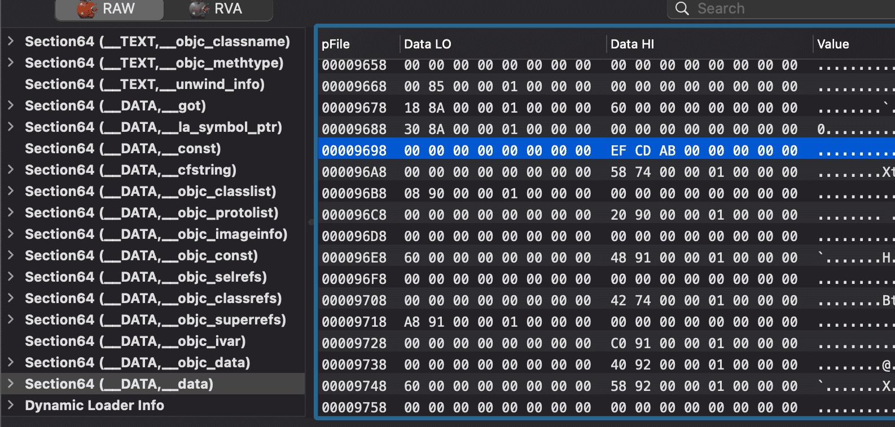
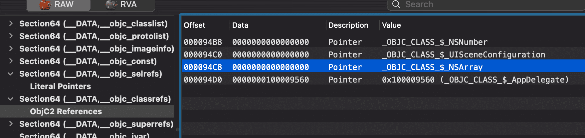
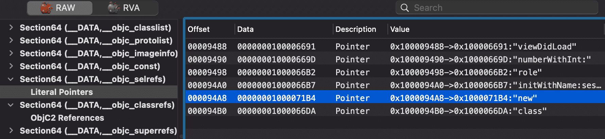
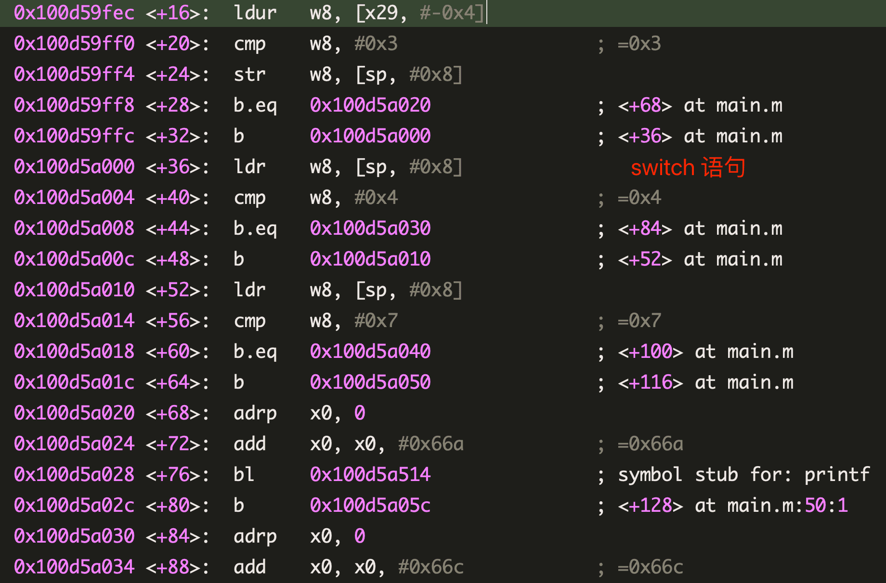
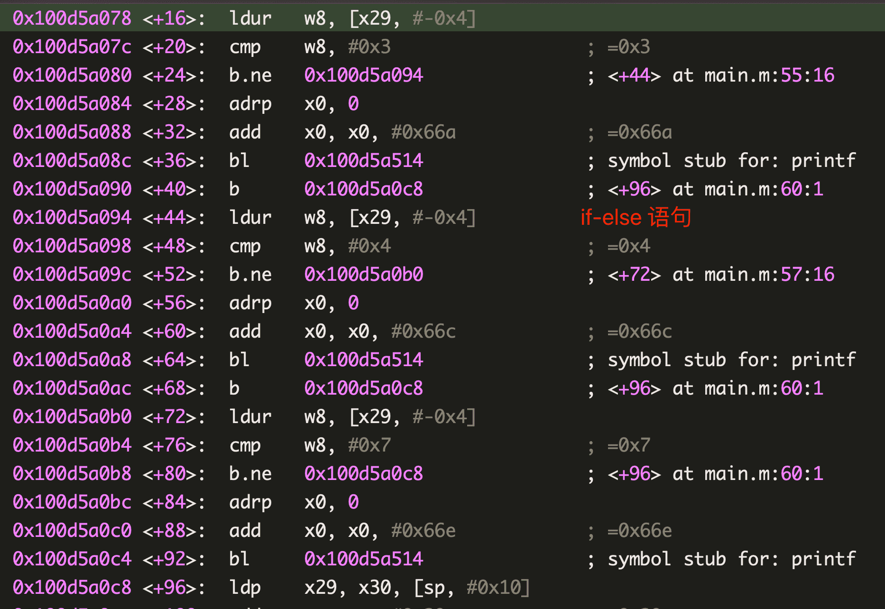
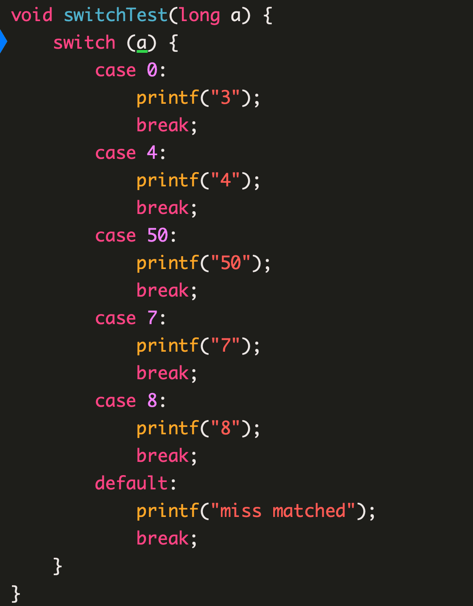
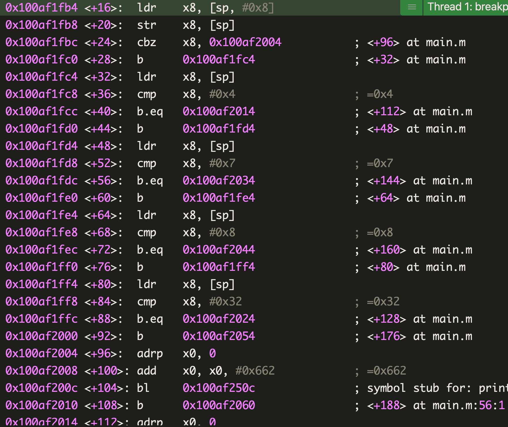

逆向学习笔记 - 部分场景的 ARM64 汇编指令
本文将对高级语言中常见的基础语句块进行汇编代码调试，如全局变量、局部变量、
if/for/while语句、switch、指针类型等，以加深印象和理解，方便在查看二进制反汇编代码时能快速识别并准确地“翻译”为高级语言伪代码。
全局变量 & 局部变量
下面代码中，全局变量和局部变量是如何取值并参与运算的呢？
1 | |
在
main 中调用 int res = sumV(0x1, 0x2);，在 sumV 首行添加断点，设置 Xode 展示汇编指令，以默认的 Debug 优化级别运行，如下：1 | |
- 前三行开辟栈空间 -> 保存上一个函数栈底信息和自己的返回地址 -> 保存自己的栈底地址
- 第 4 行的
stur等同于str，但操作数为负数，结果是将两个形参放到栈底开始的位置 adrp x8, 3：adrp以页为单位的大范围的地址读取指令。将 3 左移 12 位得到的数与清空了低 12 位的 pc 寄存器的值相加，结果放入 x8 中，这是某个 Page 的起始地址，配合接下来的偏移操作add x8, x8, #0x6a0，x8 中存放的是一个特定的地址。如果基址偏移为0x100dbc000，可以计算出来 x8 中的地址在二进制中的偏移为：0x100dc2000 + (3 << 12) + 0x6a0 - 0x100dbc000 = 0x00000000000096a0，如下图，高 8 位即为globalVal的值： 接下来将它存到了栈底偏移0xc处- 第 16 行是一个
objc_msgSend调用，上面分别通过adrp指令准备了参数 x0 和 x1，同上，计算可知它们的值分别来自于二进制文件偏移量0x00000000000094c8和0x00000000000094a8处，根据objc_msgSend调用规则，x0、x1 分别是NSArray.class和new，接下来将返回值存到了栈顶偏移0x18处: - 接下来是两个基本类型的临时变量，是立即数通过寄存器中转存到了栈空间中，等到需要做加法运算时，再取到寄存器中做运算
- 最后 4 行将返回值存入 x0 ，恢复主调函数调用环境退栈并
ret - 在函数即将退栈时，第 34 行以 x8 和
nil为形参调用了objc_storeStrong，x8 是arr变量的指针，目的是在离开作用域时对指针置空，引用计数 -1，以期待下一个 RunLoop 时实例对象的内存能被 AutoReleasePool 自动释放。objc_storeStrong的实现：1
2
3
4
5
6
7
8
9
10void objc_storeStrong(id *location, id obj)
{
id prev = *location;
if (obj == prev) {
return;
}
objc_retain(obj);
*location = obj;
objc_release(prev);
}
总结
- 全局变量存放于数据区，和代码区距离较远，使用
adrp来加载 - 局部变量如果是基本类型，将会以立即数的形式加载；如果是对象类型，将加载指向堆区的指针
- 由于
NASrray来自于动态库，其地址（或者说偏移值）在二进制 rebase 阶段才会被决定，所以上图中只能展示为0x0
条件、循环语句
for、if、while、do-while 语句的汇编相差不大。参考以下代码：
1 | |
按上述方法编译成汇编得到：
1 | |
cmp label1, label2实际是执行 label1 和 label2 相减的操作，其结果会影响 cpsr 寄存器，后续的b.ge和b.le根据 cpsr 寄存器的标记为决定是否跳转到指定地址执行：b.ge label: 结果是大于等于时跳转到 label 执行b.le label: 结果是小于等于时跳转到 lebal 执行
break语句编译为了一个无条件跳转指令b label，跳转到循环体的外面第一行指令处
switch 语句
从 C 的角度来看，switch 和 if-else 是可以等价变换的，但是在汇编底层角度它们有什么不同呢？
case 分支小于 4 个
将下面两个函数编译成汇编代码：
1 | |


可以看到它们几乎没有区别，都是通过 cmp 和 b 语句来控制流程走向。
case 分支跨度过大
再来看看 switch case 超过 4 个，但 case 最小值和最大值超过 50 的情况：


汇编层面同样是通过
cmp 和 b 语句来进行控制的正常情况的 switch
case 分支多于 4 个且最大值和最小值差值不超过 50 时：
1 | |
形参传入 10 ，Xcode 运行后的汇编代码：
1 | |
- 第 6-7 行表示让 w8 和
0x2相减，结果存入 w8 并影响 cpsr 寄存器。w8 保存的是形参 10，与 case 最小值 2 相减，结果存入 x9。计这个差值为 D1 - 第 8 - 11 行，首先通过
ubfx x9, x9, #0, #32清空 x9 高 32 位，只保留低 32 位的值，这里即是 D1，让 D1 与case 的最大最小差值（此处为0xa，计这个差值为 D2）比较，如果最终无符号大于，表明 D1 跨越的范围大于 case 的最大最小值，说明不可能匹配成功，直接跳转到 default 分支或 switch 语句块的下一行执行，此处形参传入的是 10，在 case 最大值和最小值之间，所以会进入 switch 特有的查表跳转流程 - 第 12 - 17 行，先通过 page 偏移找到一个地址存入 x8，然后将之前存到栈区的只保留低 32 位的值放入 x11，后面的
ldrsw x10, [x8, x11, lsl #2]表示将 x11 左移两位，再加上 x8，把结果作为地址寻址，将得到的值存入 x10，执行完毕后，x10 的值为0xffffffffffffffe8，看起来像是一个负数，去掉最高位逐位取反后加 1，为 -24。x8 保存的是一个起始地址，把偏移量了 -24 后的地址放入 x9 中，接下来br语句以 x9 里面的值作为地址跳转。相比较if-else，这里只需要这一次跳转即可，无需逐个比较 case 的值 - 传入的 value 经过 x8 加上一个偏移量后，就可以得到真正要执行的地址。偏移量是传入的 value 决定的，那么 x8 处是什么呢？查看
0x0000000100b02040处的内存数据，可以看到类似的负数有 11 个， case 最大值和最小值之差 10，再加上一个 default case 刚好就是 11。这个偏移值数组需要占用内存空间，case 分支差值跨越越大耗费的内存空间也大，编译器会决定 switch 编译后的汇编指令是查表跳转还是if-else形式的逐个cmp+b，1
2
3
4
5(lldb) x/16 0x0000000100b02040
0x100b02040: 0xffffff98 0xffffffe8 0xffffffa8 0xffffffe8
0x100b02050: 0xffffffe8 0xffffffc8 0xffffffd8 0xffffffe8
0x100b02060: 0xffffffe8 0xffffffe8 0xffffffb8 0xd10083ff
0x100b02070: 0xa9017bfd 0x910043fd 0xb81fc3a0 0xb85fc3a8
总结
- case 分支少于 4 个时，
switch的效率和if-else语句一样 - case 分支多余 4 个且分支最大值和最小值差值合理（ arm64 时是少于等于 50 个，可能和具体的架构与编译器版本、代码优化级别有关）时，会有一个内存表来辅助计算跳转到分支的地址，得到地址后直接跳转，不在逐个比较，效率最高
- case 分支最大值和最小值差值太大时，
switch会退化成if-else语句 - 对效率要求敏感的代码，可将代码结构优化成符合
switch的要求，提高代码执行效率
指针
Objective-C 里面少不了和各种各样的指针打交道，如果从底层汇编角度来看，指针到底代表什么呢？对指针类型做偏移操作，偏移值如何计算？
在 Objective-C 中，对象是指一块能存储数据并具有某种类型的内存空间，一个对象 a 它有值和地址 &a，运行程序时，计算机会为该对象分配存储空间，存储该对象的值，我们通过该对象的地址，来访问存储空间中的值。指针 p 也是对象，它同样有地址 &p 和存储的值 p，只不过，p 存储的数据类型是数据的地址。如果我们要以 p 中存储的数据为地址，来访问对象的值，则要在 p 前加解引用操作符 *，即 *p。
指针偏移
1 | |
多级指针
1 | |
本博客所有文章除特别声明外，均采用 CC BY-SA 4.0 协议 ，转载请注明出处！